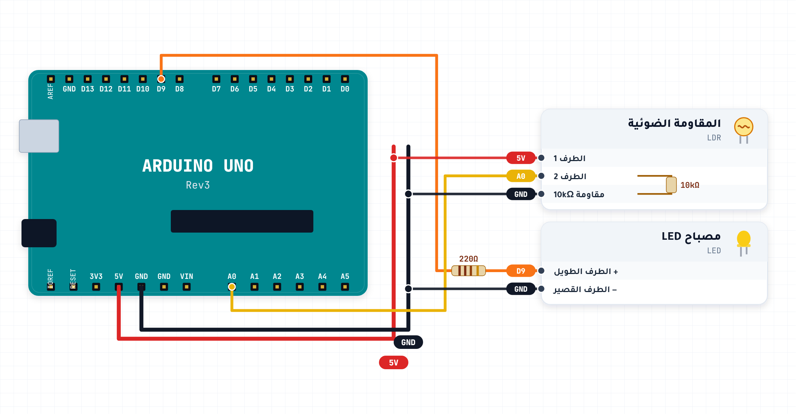

▶فيديو الشرح
المقاومة الضوئية تكشف الظلام فيشغّل الأردوينو الإضاءة تلقائياً، مثل أعمدة الشوارع.
1المكونات
ARDUINO UNOboardالمقاومة الضوئيةLDRمصباح LEDLEDأسلاك توصيلJumper Wiresلوحة تجاربBreadboard
2مخطط التوصيل

اضغط على المخطط لتكبيره · نسخة SVG عالية الدقة
| القطعة | الطرف | يوصل إلى |
|---|---|---|
| المقاومة الضوئية | الطرف 1 | 5V |
| المقاومة الضوئية | الطرف 2 | A0 |
| المقاومة الضوئية | مقاومة 10kΩ | GND |
| المقاومة الضوئية | مقاومة 10kΩ | بين «الطرف 2» و «مقاومة 10kΩ» |
| مصباح LED | + الطرف الطويل | D9 عبر مقاومة 220Ω |
| مصباح LED | − الطرف القصير | GND |
3الكود
لا يحتاج هذا المشروع إلى أي مكتبة إضافية.
/* المشروع 13: نظام الإنارة التلقائي للعتمة (LDR) كتاب: 38 مشروع في شهر — لؤي النصري (@robotlouay) التوصيل (مقسم جهد): - طرف الـ LDR الأول ← 5V ، والطرف الآخر ← A0 - مقاومة 10kΩ بين A0 و GND - LED ← 220Ω ← Pin 9 ، والطرف القصير ← GND الخطوة 1: افتح Serial Monitor ولاحظ القيم في الضوء وفي الظلام. الخطوة 2: ضع قيمة بينهما في DARK_LEVEL. */ const int LDR_PIN = A0; const int LED_PIN = 9; const int DARK_LEVEL = 300; // أقل من هذه القيمة = ظلام (عدّلها حسب غرفتك) const int MARGIN = 30; // هامش لتجنب الوميض عند الحد الفاصل bool lightOn = false; void setup() { Serial.begin(9600); pinMode(LED_PIN, OUTPUT); } void loop() { int light = analogRead(LDR_PIN); // ضوء أكثر = قيمة أعلى Serial.print("Light: "); Serial.println(light); if (light < DARK_LEVEL - MARGIN) lightOn = true; // حلّ الظلام else if (light > DARK_LEVEL + MARGIN) lightOn = false; // عاد الضوء digitalWrite(LED_PIN, lightOn ? HIGH : LOW); delay(200); // تطوير: سطوع متدرج حسب الظلام // analogWrite(LED_PIN, map(constrain(light, 0, 800), 0, 800, 255, 0)); }
4كيف يعمل؟
- LDR ومقاومة 10kΩ تشكلان مقسم جهد
- analogRead(A0): ضوء أكثر = قيمة أعلى
- تحت الحد الفاصل → إضاءة
- هامش صغير يمنع الوميض
⚠ قبل توصيل الكهرباء: راجع كل سلك مع الجدول أعلاه، وتأكد من عدم وجود تماس بين 5V و GND. اختر اللوحة والمنفذ الصحيحين من قائمة Tools في Arduino IDE.